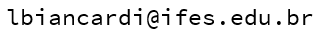

GitHub Luciano B. Fiorino

Dissertação de Mestrado
REPLICABILIDADE DE DATASETS DE REDE A PARTIR DA REUTILIZAÇÃO DE TRACES DE PACOTES
Publicação
Reprodutibilidade e Extensibilidade de Datasets de Tráfego de Rede: um estudo da replicação de traces de pacotes (SBESC 2021 - WiP Track)
DOI:
https://doi.org/10.5753/sbesc_estendido.2021.18500